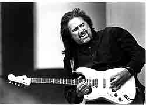

Coco Montoya
Темпераментный наследник Альберта Коллинза

Однажды обычным вечером 69-го года восемнадцатилетний парень из Санта-Моники, штат Калифорния, барабанщик местной рок-группы, пошел на концерт "Creedence Clearwater Revival". Парня звали Коко Монтойя. Шоу открывало выступление чернокожего блюзмена Альберта Кинга. Его игра перевернула мировоззрение молодого музыканта - он понял, что блюз отныне будет смыслом его жизни.Коко Монтойя - простой сын рабочего, росший в пригородах Лос-Анджелеса в эпоху бума рок-музыки. Он заслушивался "Битлами", "Роллингами", "Криденсами" и сам рано начал пробовать играть, собрав с друзьями рок-группу. У его отца была большая коллекция пластинок, но только не рок-н-ролла, а джаза, и, наверное, именно такое сочетание привело начинающего барабанщика к блюзу. Если бы он не попал на тот концерт Альберта Кинга, то все равно рано или поздно эта музыка вошла бы в его жизнь. Рок был для него слишком прямолинеен, а джаз - чересчур изыскан и элитарен. В блюзе были душевное тепло, подлинная страсть и интересные истории. Как вспоминает сам Монтойя, песни Альберта Кинга переделали его изнутри: "Жизнь вдруг изменилась - эта музыка вошла в мою душу. Я был настолько переполнен эмоционально, что плакал прямо на концерте".
Но почувствовать - одно, а играть - совсем другое. Коко не был знаком ни с кем из блюзменов, все его друзья были рокерами и он так и продолжал стучать на барабанах в разных группах до 1972 года. Именно тогда, в небольшом городе Калвер-сити, в клубе, где он работал, и произошла вторая его историческая встреча. Монтойя играл по субботним и воскресным вечерам, и как-то раз днем в выходной в этом клубе должно было состояться выступление великого блюзмена из Техаса Альберта Коллинза. Владелец клуба предоставил его группе ударную установку Монтойи, а самого барабанщика даже не предупредил. Понятное дело, он был изрядно разозлен, когда увидел кого-то, играющего на его барабанах и пошел разбираться, в чем дело. Коллинз сам извинился перед ним и пригласил послушать его шоу. То, что он раньше пережил на концерте Альберта Кинга, повторилось вновь, но теперь он познакомился с Коллинзом и это, как оказалось, стало началом карьеры Монтойи в блюзе. Коллинз через несколько месяцев позвонил и сказал ему, что если он хочет, то может присоединиться к его бэнду и ехать в турне. И буквально через три часа после звонка они уже были в автобусе, а вечером давали первый концерт вместе - никаких репетиций, прямо с ходу.
Монтойя оставался вместе с Коллинзом до 1978 года. Альберт опекал молодого музыканта как мог - чем-то ему очень импонировал этот парень с испанской внешностью и неуемным желанием научиться играть блюз. Коллинз сам предложил ему учиться играть на гитаре - они просиживали часами в гостиничных номерах и играли по очереди. Великий блюзмен учил новичка единственным доступным ему способом - просто показывал то, что умел, а Монтойя повторял за ним. Коллинз все время твердил ему: "Не пытайся сразу вникать в детали - просто почувствуй, как это звучит". Время шло, мастерство новоиспеченного гитариста совершенствовалось, и учитель с учеником все больше привязывались друг к другу.
В один прекрасный день Альберт Коллинз сказал Коко: "Ты теперь для меня как сын". Это были не просто слова - Коллинз на самом деле стал представлять всем своего ученика такими словами: "Please meet my son, Coco". Так он сказал в 1979 году и Брюсу Иглауэру, шефу лейбла "Аллигатор", чем изрядно удивил того. Но когда Брюс послушал Монтойю, то понял, что Альберт говорил это не зря - Коко не просто копировал своего "отца" - он глубоко прочувствовал сам стиль и действительно стал музыкальным наследником великого техасца.
Однако если вы думаете, что знаменитый Коллинз со своей командой в семидесятых годах зарабатывал кучу денег, то вы жестоко ошибаетесь. 40-50 долларов на человека за выступление - это было все, что они имели, а ведь иногда проходили целые недели без концертов. Не было никаких контрактов с крупными фирмами звукозаписи или промоутерами, которые могли бы вывести их на большие площадки. Они часто бедствовали, но Монтойя вспоминает эти годы как самые счастливые в своей жизни.
Кстати, не знаю технических деталей того, как Коко учился играть на гитаре, но если вы взглянете на фотографию, то увидите, что струны у него расположены в порядке, противоположном обычному. То есть толстые снизу, а тонкие - сверху. Очень редкая особенность. Впрочем, на его стиле это как-то специально не сказывается.
В конце семидесятых наступила эра диско и с выступлениями стало совсем плохо. Монтойя решил бросить музыкальную карьеру - он считал, что время большого бизнеса для блюза безвозвратно прошло. Они с Коллинзом остались лучшими друзьями, часто звонили друг другу, но Коко работал барменом, а музыкой занимался в свободное время, поигрывая в клубах на джемах с местными любителями и профессионалами. Монтойя не забросил гитару - он теперь предпочитал ее ударной установке, хотя иногда брал в руки и барабанные палочки. Время шло и, казалось, ничто не предвещало никаких неожиданностей, но однажды в лос-анджелесский клуб, где вечером играл Коко, забрел Джон Мэйолл. Это был уже 1984 год.
Монтойя так говорит об этом вечере:
- Там в основном собирались музыканты вроде меня, но заходили и известные рок-исполнители. Я частенько джемовал с басистом из "Thin Lizzy" Филом Лайноттом, а однажды даже довелось поиграть с Филом Коллинзом, правда, тогда он еще не был широко известен. Так вот, когда я узнал, что в клубе находится Мэйолл, то вдруг вспомнил, что мне говорили про его день рождения - вроде как раз дата совпадала. И я объявил, что в честь этого события исполню вещь "All Your Love", которую Джон раньше играл вместе с Клэптоном.Мэйоллу очень понравился совершенно незнакомый ему гитарист, он спросил у клубных техников, делал ли кто запись концерта и ушел из клуба с магнитофонной кассетой. И она ему пригодилась - спустя совсем немного времени Мэйоллу потребовался новый гитарист для обновленных "Bluesbreakers" и он вспомнил о записи. Послушал ее еще раз и позвонил Коко Монтойе - прямо в бар "British Pub", где тот стоял за стойкой и обслуживал клиентов.
Коко не поверил, что ему звонит сам Джон - решил, что его разыгрывает кто-то из друзей. Он что-то раздраженно проворчал в ответ и повесил трубку. По счастью, Мэйолл догадался, в чем дело и перезвонил. Когда Монтойя во второй раз услышал в трубке его спокойный голос, говорящий: "Нет, нет, это действительно я, Джон," - он понял, что уроки гитары Коллинза теперь ему опять пригодятся. Он все-таки попросил время на раздумья - ведь прошло столько лет и не было уверенности в том, сможет ли он вновь стать профессиональным музыкантом. Однако Коко сказал себе: "Слушай, парень, другого такого случая тебе уже не представится. Ты ведь всегда мечтал об этом, а Мэйолл - один из твоих кумиров". И он согласился.
Монтойя прекрасно понимал, что ему как гитаристу придется сражаться с призраками тех солистов, которые были в "Bluesbreakers" до него - а это ведь не кто-нибудь, а Эрик Клэптон, Питер Грин и Мик Тэйлор! "Я не понимал, почему Джон выбрал именно меня", - недоумевал Коко. Но решение было принято и оставалось принять вызов. В результате он задержался у Мэйолла на целых десять лет и его гитара стала основным солирующим инструментом группы. Он даже частенько открывал многие концерты "Bluesbreakers" песнями собственного сочинения.
Это была уже мировая известность. Трудно даже перечислить все фестивали, где они выступали. Если взять самые известные, то достаточно упомянуть "North Sea Jazz Fest", "Montreaux Jazz Fest", New Orleans Jazz & Heritage Fest", San Francisco Blues Fest": Наконец-то он появился на альбомах - "Bluesbreakers" в то время выпускали диск за диском. "Behind The Iron Curtain", "Raw Blues", "The Power Of The Blues", "Road Shaw", "Chicago Line" и два, пожалуй, лучших альбома того времени - "A Sense Of Place" и "Wake Up Call". Его с Мэйоллом версия песни Джи Джи Кейла "Sensitive Kind" с абсолютно неподражаемым гитарным соло привела в восторг огромное количество блюзфанов и не только их - некоторые меломаны покупали диск "A Sense Of Place" только из-за этой вещи.
Монтойя так вспоминает десятилетие в "Bluesbreakers": "Все было классно организовано. Джон сам очень дисциплинированный человек и требовал этого же от других. Он держал под контролем буквально все. Конечно, и с деньгами был полный порядок - я зарабатывал гораздо больше, чем раньше. Вот только при этом все время чувствовалась какая-то напряженность. Слишком много теней стояло позади - через группу прошло большое количество музыкантов, в том числе и гениальных. Понимаете, приходилось постоянно действовать с оглядкой и стараться соответствовать. Да и в первые несколько лет, когда я играл в группе, в ней был еще один сольный гитарист - Уолтер Траут. Зачастую происходило нечто вроде соревнования. Мне это не очень нравилось".
Монтойя не ограничивался только "Блюзбрейкерами". В 1993 году он принял участие в записи альбома Альберта Коллинза "Collins Mix". Там-то Альберт и сказал ему: "Сынок, тебе пора уже что-то делать самому". Коко - человек тяжелый на подъем и он не сразу решился на то, чтобы уйти от Мэйолла. Решающим толчком послужил его визит к тому же Коллинзу, который уже был смертельно болен. Он сказал Монтойе еще раз: "Я знаю, что с Джоном тебе работается хорошо, но нельзя упускать время. Делай свою музыку".
И Коко решился. В 1993 году он покинул "Bluesbreakers": Мэйолл, кстати, хорошо его понял и даже дал несколько полезных советов на прощание - патриарх британского блюза далеко не впервые отпускал из своей группы классного гитариста в свободное плавание. Монтойя зря боялся самостоятельности. Первый же его альбом 1995 года "Gotta Mind To Travel" имел просто ошеломительный успех. Сразу четыре номинации на премию им. У. Хэнди и в итоге один приз - как лучшему новому блюзовому артисту. Он сам совершенно не ожидал от себя такой прыти. Это придало музыканту уверенности, а заодно помогло заключить новые контракты с фирмами звукозаписи. Следующий его проект под названием "Ya Think I'd Know Better", сделанный в жестком блюз-роковом стиле, пользовался не меньшей популярностью. Достаточно сказать, что он продержался в блюзовом чарте "Биллборда" целых 14 недель, поднимаясь до десятой позиции. Американская пресса отзывалась о Коко Монтойе как о гитаристе-открытии и самом яростном и страстном блюз-рок музыканте последних лет.
После альбома 1997 года "Just Let Go" его гастрольное расписание стало таким плотным, что работать в студии стало просто некогда. 220 концертов в год - это не шутка! Однако в конце 1999 года он все же отреагировал на просьбу шефа "Alligator Records" Брюса Иглауэра и записал свои новые песни для альбома "Suspicious". Он вышел в начале 2000 года. Альбом получился несколько мягче, чем предыдущие и приобрел такой явный "техасский" оттенок. Может быть, это воспоминание о его великом учителе, Альберте Коллинзе? Во всяком случае у Монтойи все еще впереди. Для блюзмена пятьдесят - это не возраст.
Евгений ДОЛГИХ
Фото Роберта Барклая
В работе иcпользованы материалы, предоставленные "Alligator Records"Перепечатано из журнала (c) 2001 jazz-квадрат